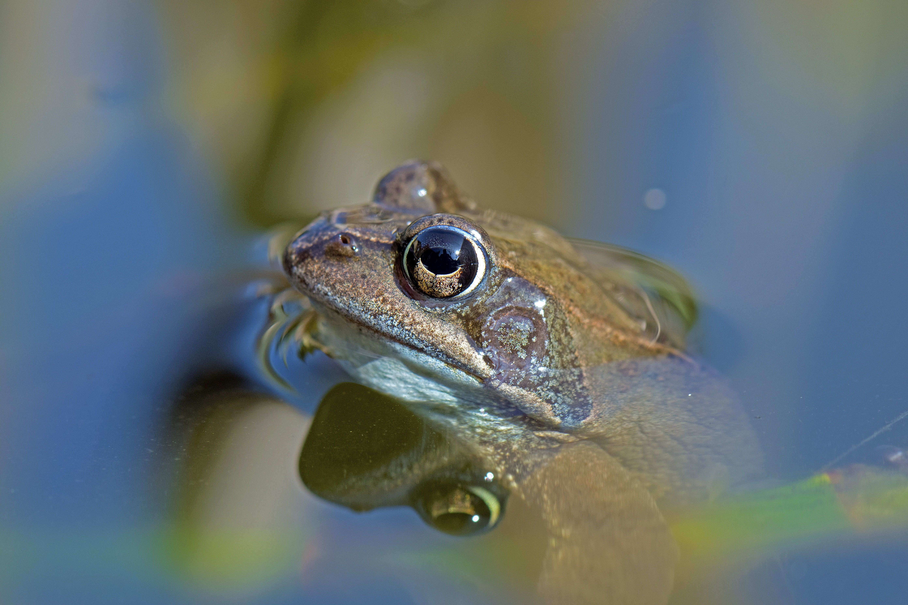

RANA
Hábitat
Viven en zonas húmedas como ríos, lagos y selvas.

Características:
Descripción:
La rana es considerada como uno de los animales más antiguos que existen desde el comienzo de la vida en nuestro planeta, ya que se han demostrado y descubierto gracias a fósiles de estas, que tienen una antigüedad aproximada de más de 265.000.000 de años, allá por la era del pérmico.